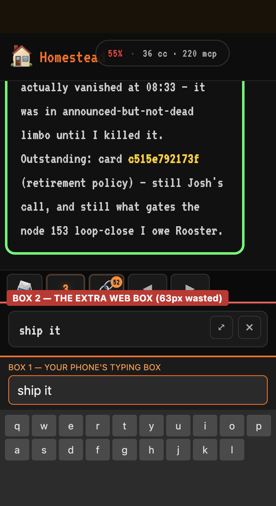
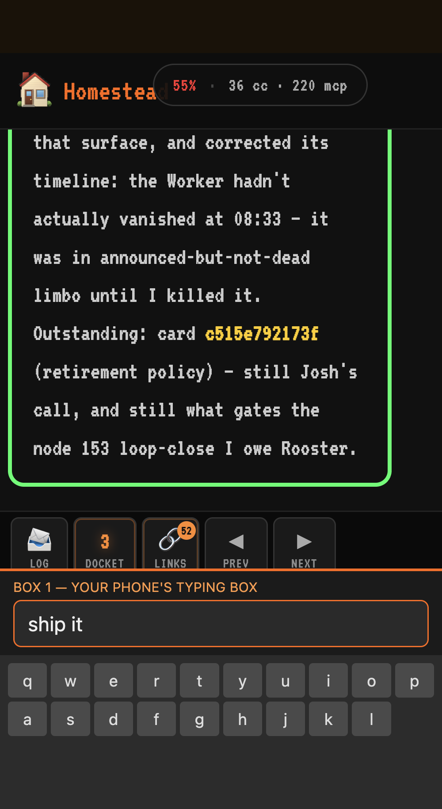

One type box, not two
Tapping TYPE on your phone used to open two typing boxes stacked on each other. Now it opens one.
Already live. Nothing to install — no app update needed. Just open the presenter and pull down to refresh once.
Open the presenter →
Refresh once, then tap TYPE.
What you should see

Before — two boxesBoth said the same thing. The extra one ate a band of screen you couldn't use.

After — one boxJust your phone's typing box. More of the card stays readable.
The numbers
Typing boxes on screen2 → 1
Screen space given back123 px
App update requiredNone
Check it yourself — tap each when done
- Open the presenter above and refresh once.
Pull down to refresh so it picks up the change.
- Tap TYPE.
You should see exactly one typing box come up with the keyboard — your phone's own. No second box above it.
- Type something.
More of the card should still be readable than before.
- Send it with the send button.
It sends, and the box empties — the clear-after-send you just got still works.
- Type something, then swipe the keyboard away without sending.
Tap TYPE again — your half-typed text should still be there.
- Tap TYPE once more to close it.
Everything closes normally, same as always.